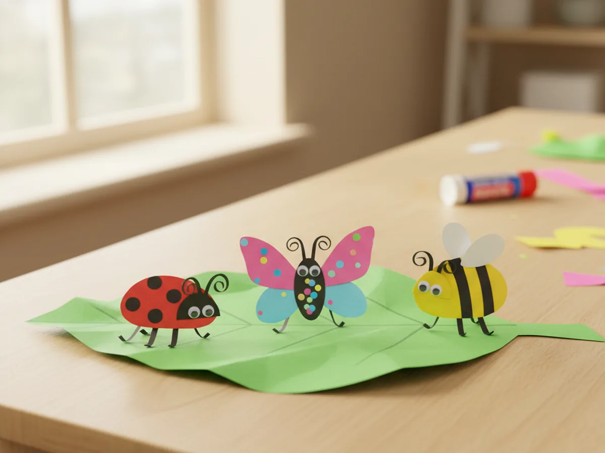
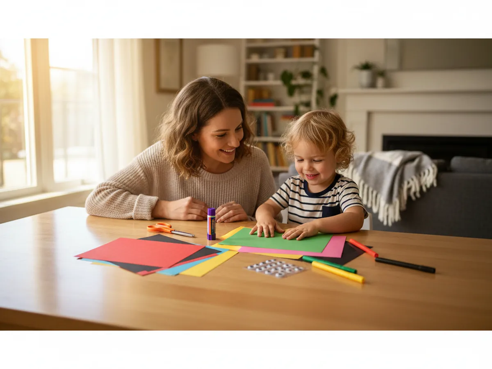
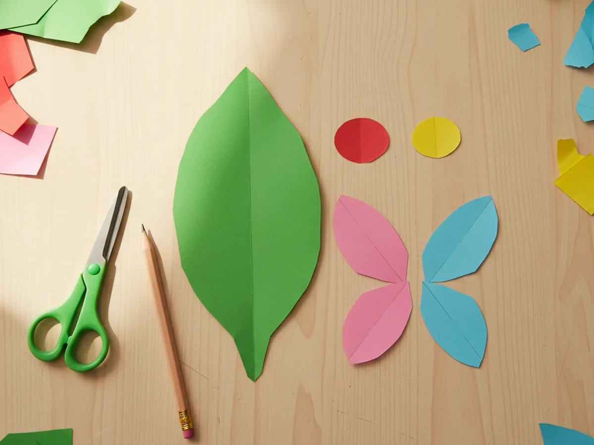
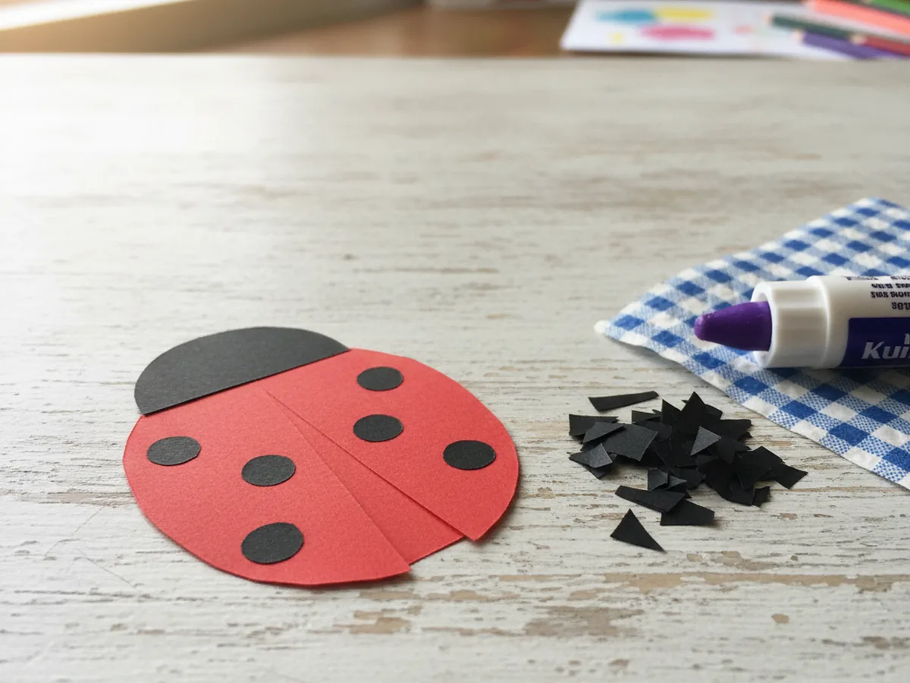
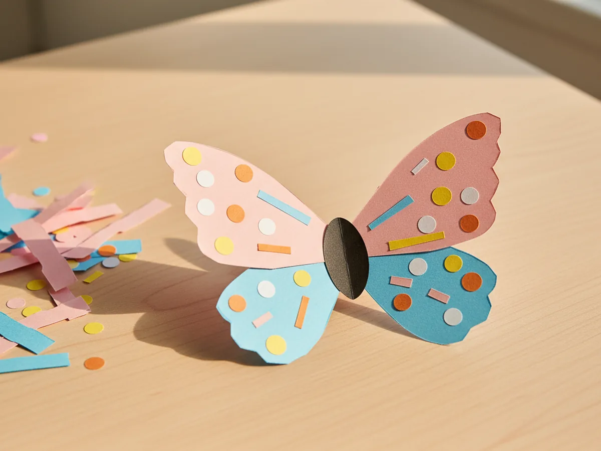
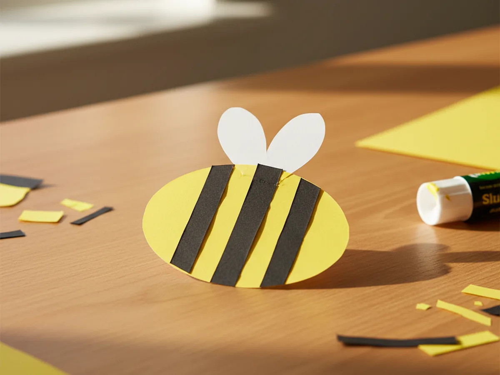
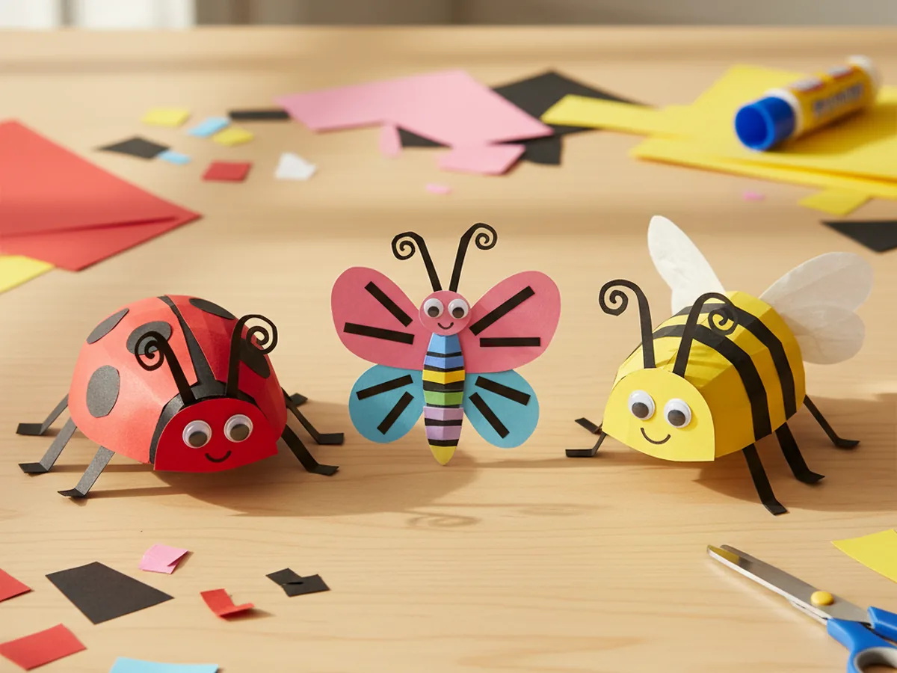
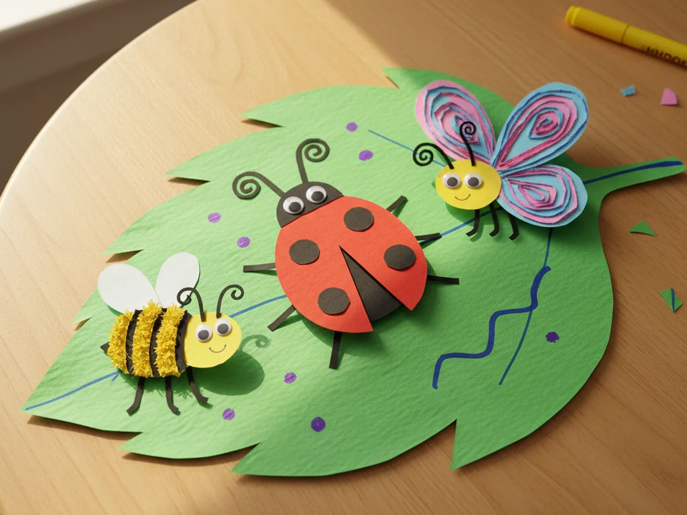

If your little one squeals at the sight of a tiny ladybug crawling across the porch or chases butterflies around the backyard every spring, this paper bugs craft is going to feel like pure magic on the kitchen table. With a few sheets of bright construction paper, a glue stick, and a quiet afternoon, you and your child can make a sweet trio of paper bugs sitting on a giant green leaf together. 🌿
The best part is that this whole paper bug craft is built from simple ovals, dots, and strips. No tricky cutting, no fragile folding, no Pinterest-perfect skill required. It is a slow, gentle little project that turns into something genuinely cute by the end, and your child will be carrying their finished leaf around showing every member of the family before the glue is even dry.
Why Kids Love This Craft
Kids love this paper bugs craft because they get to make not just one bug but a whole tiny bug family in one sitting. There is something so satisfying about watching a red oval slowly turn into a real ladybug, then a yellow oval turn into a bumbling little bee, then a butterfly appear with its pretty wings. Toddlers and preschoolers love the variety, and bigger kids love getting to decorate each bug with their own little touches.
There is also a real developmental side to this paper insect craft that makes it a wonderful pick for young children. Cutting simple oval shapes builds early scissor confidence with forgiving curves. Placing the tiny black spots on the ladybug, the stripes on the bee, and the dots on the butterfly wings practices the kind of careful fine motor placement that helps with early writing later on. And arranging three bugs onto one leaf teaches gentle planning and composition without ever feeling like a lesson.
And then there is the moment when your child holds up the finished green leaf with all three little paper bugs on it and proudly tells you exactly what each bug is doing. That sweet flash of imagination is exactly what makes a simple spring afternoon feel like a memory worth keeping. 💚

What You'll Need
Here is everything you need to make this paper bugs craft at home. Lay all the supplies out on a clean table before your child sits down so the whole project flows without anyone hunting for the glue stick mid step.
- Crayola Construction Paper (240 Sheets, 12 Colors), includes the red, yellow, black, pink, and blue sheets you need for all three little bugs.
- Astrobrights Colored Cardstock Primary 5-Color Assortment, sturdy green cardstock for the big leaf base so the finished bug scene holds its shape.
- Fiskars 5 Inch Pointed-Tip Kids Scissors, safe blades that cut clean ovals and tiny details without frustrating little hands.
- Elmer's Disappearing Purple Washable Glue Sticks (18 Pack), dries clear so the bug shapes look tidy, washes off little fingers easily.
- DECORA Self-Adhesive Googly Eyes, 10mm, peel and stick so kids can place the eyes exactly where they want on each bug.
- Crayola Broad Line Markers (10 Classic Colors), for adding cute mouths and tiny extra details on the finished bugs.
- A pencil, for lightly tracing the leaf and oval shapes before cutting.
Step-by-Step Instructions
This paper bugs craft comes together in six gentle steps that even a 3 year old can follow with a little help. Take it slowly, hand over the easy parts, and enjoy watching your tiny bug family come to life. ✨
Step 1: Cut the Leaf Base and Bug Bodies
Start by cutting one large leaf shape from green cardstock, about eight inches long and five inches wide, with two gentle points at each end. Then cut three small bug bodies from construction paper: one red oval about two inches across for the ladybug, one yellow oval the same size for the bee, and two pairs of small wing shapes in pink and blue for the butterfly. These pieces are the bones of your paper bugs craft, and none of them need to be perfectly shaped.

Step 2: Decorate the Ladybug
Now bring out the black construction paper. Cut a small half-circle about an inch wide and glue it onto the top of the red oval as the ladybug's head. Then cut five or six tiny black paper dots, the size of small confetti, and glue them onto the red body as spots. This is where the paper bug craft starts to feel like a real little creature, and it is usually the first moment your child gets really excited.

Step 3: Build the Butterfly Wings
Time for the prettiest bug. Cut a small black oval about an inch and a half long for the butterfly body and glue it down the center between the two pairs of wings, so the pink and blue wings stick out on either side. Then cut a few small paper dots and tiny stripes in other colors and glue them onto the wings as decoration. Your paper insect craft butterfly is suddenly bright, cheerful, and one of a kind.

Step 4: Stripe the Bee
Now for the busiest little bug. Cut three thin black paper strips about a quarter inch wide and glue them horizontally across the yellow bee oval to create the classic black and yellow stripes. Then cut two small white teardrop shapes and glue them on top of the body as wings, peeking up above the stripes. The bee in this paper bugs craft instantly looks like it is about to buzz right off the table.

Step 5: Add Legs, Antennae, and Eyes
Now for the personality. Cut several thin black paper strips for legs, about half an inch long each, and glue three on each side of the ladybug and three on each side of the bee. Cut two tiny antennae for each bug from thin black strips and curl the tips with your finger. Finally, press two small self-adhesive googly eyes onto the ladybug's head, the bee's head, and the butterfly's body. Suddenly every bug has a face, and the whole paper bug craft comes alive.

Step 6: Glue the Bugs onto the Leaf
Time for the final magic moment. Arrange the ladybug, the butterfly, and the bee on the big green leaf however your child likes, then glue each one down so the whole paper bugs craft becomes one little outdoor scene. You can add a few small marker dots for tiny ants, draw a wavy line between the bugs for a buzzing path, or write your child's name and the date on the back of the leaf. Step back together and admire your finished bug family on its green leaf. 🐞

Variations to Try
Bug Garden Mobile: Skip the leaf base and punch a small hole at the top of each finished paper bug, then string them onto thin twine and tape the twine across your child's bedroom window. The bugs will sway gently in the breeze and catch the spring sunlight in a way that feels almost like real fluttering.
Toilet Paper Roll Bugs: Wrap the same colored shapes around empty toilet paper rolls instead of laying them flat. The finished bugs stand up like little 3D creatures and look adorable lined up along a windowsill, a bookshelf, or your child's play table. Perfect for turning the craft into real little spring decorations.
Alphabet Bug Hunt: Make six or seven bugs instead of three, write a letter on each one with a marker, and hide them around the living room. Your child has to find each bug and say its letter out loud. Turns the craft into a fun moving learning game for older preschoolers.
Final Thoughts
This paper bugs craft is the kind of project that quietly turns into a spring favorite. The materials are forgiving, the steps are gentle, and the finished little leaf with its bug family keeps giving back for days through pretend bug stories, fridge displays, and excited show-and-tell moments. Watching your child point at each bug they made with their own hands is one of those simple parenting wins that sticks with you long after the glue stick goes back in the drawer.
If your little one enjoyed making these paper bugs, save the tutorial on Pinterest so you can come back to it the next time spring rolls around. Happy crafting, friend.
More Crafts You'll Love
If your child loved making these paper bugs, they will love these other cute little creature paper projects next: